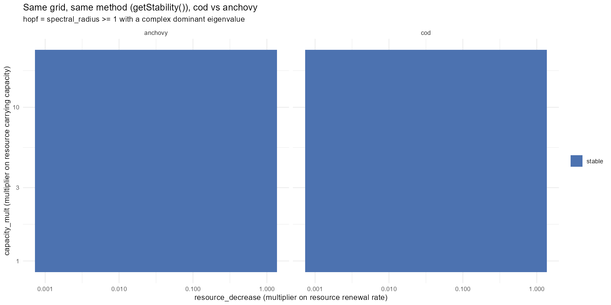
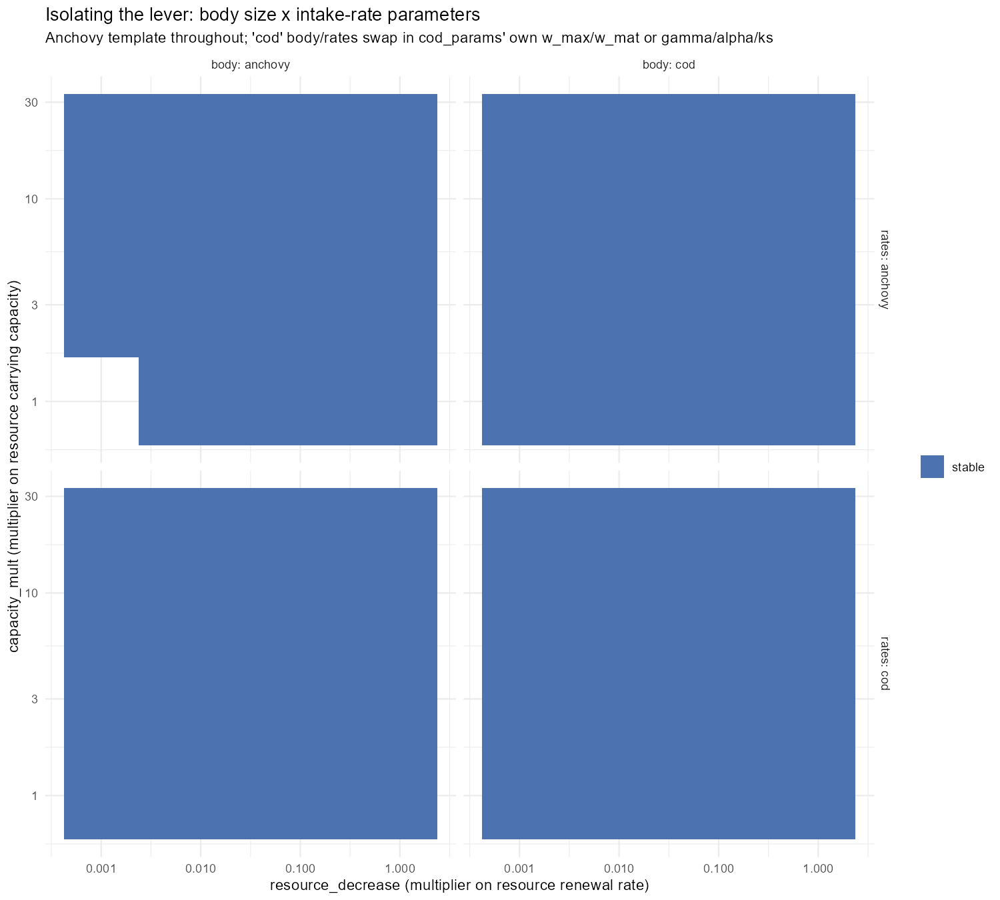
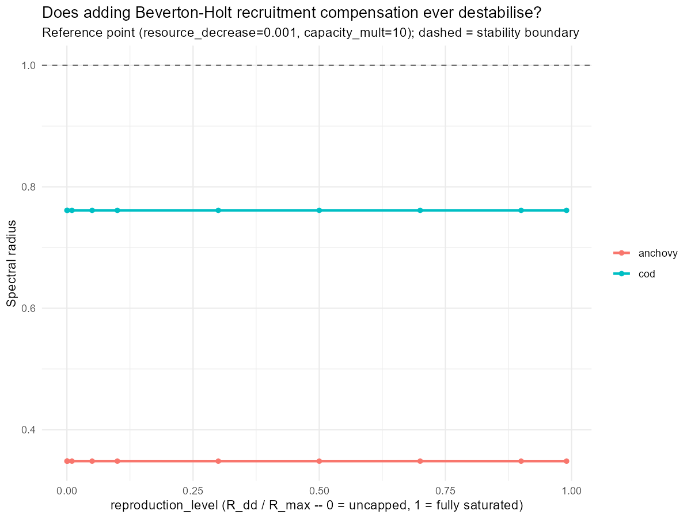
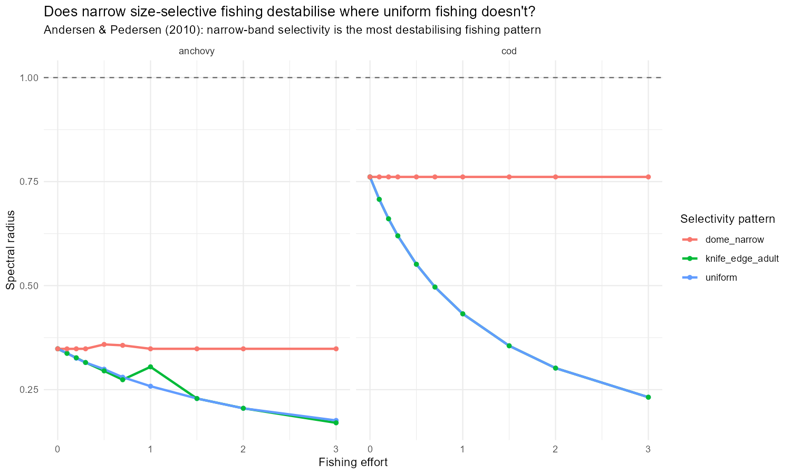
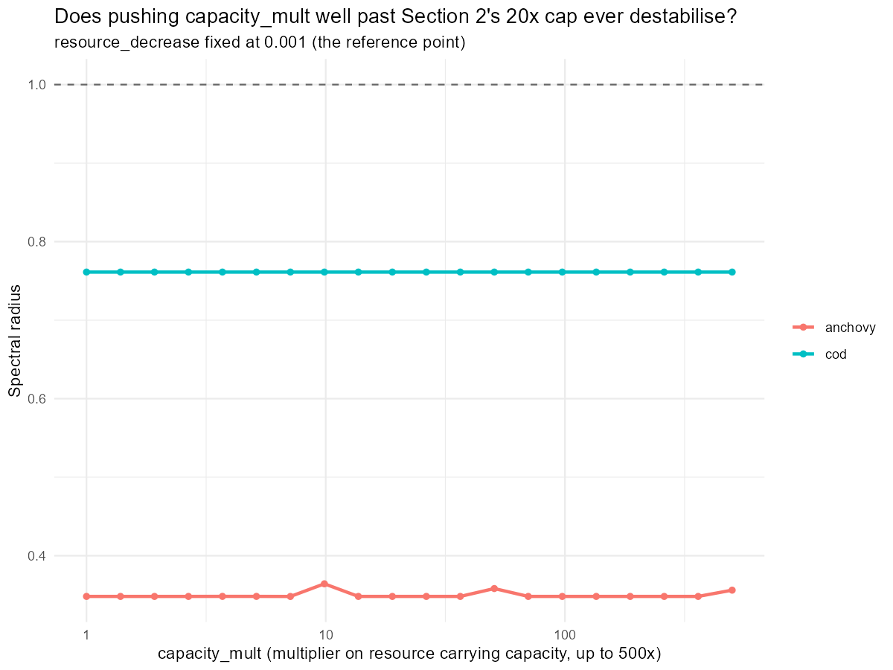

Code
library(mizer)
library(mizerExperimental)
library(dplyr)
library(ggplot2)
library(future)
library(future.apply)
library(scales)
plan(multisession)
dir.create("interesting_plots", showWarnings = FALSE)Day 28 found cod_params stable everywhere tested (spectral_radius pinned near 0.51-0.76 across a 120-point resource_decrease x capacity_mult grid), and read both cod and the anchovy calibration as “adult-driven” by de Roos & Persson’s (2003) mass-specific-ingestion-rate criterion. A follow-up read of the same paper lineage (Soudijn, de Roos et al. 2017) suggested the real lever might be a resource-vs-consumer timescale separation rather than the raw competitive-asymmetry sign alone, and three concrete ideas came out of that discussion for actually inducing a Hopf bifurcation: relaxing the reproduction cap, size-selective fishing, and pushing capacity_mult further than the 20x already tested.
Today runs all three, plus a method-matched getStability() grid for anchovy and a body-size x intake-rate factorial to isolate whichever lever turned out to matter. All four come back null. The interesting result of the day turns out to be about the method itself. Perturbing the actual simulation away from steady state, rather than trusting getStability()’s linearisation, finds a real, substantial anchovy oscillation that every grid up to that point had called stable.
library(mizer)
library(mizerExperimental)
library(dplyr)
library(ggplot2)
library(future)
library(future.apply)
library(scales)
plan(multisession)
dir.create("interesting_plots", showWarnings = FALSE)cod_params <- readRDS("../cod_params.rds")
make_anchovy_params <- function(lambda = 2.05, resource_decrease = 0.01,
capacity_mult = 10, second_order = TRUE,
ext_diff = 0.00, alpha = 0.1, gamma = 750,
ks = 0, kappa_override = NULL) {
a0 <- 100
kappa <- if (is.null(kappa_override)) a0 * exp(-6.9 * (lambda - 1)) else kappa_override
no_w <- round(log(66.5 / 0.0003) / 0.1)
params <- newSingleSpeciesParams(
species_name = "Anchovy",
w_min = 0.0003, w_max = 66.5, w_mat = 10,
no_w = no_w, lambda = lambda, kappa = kappa,
alpha = alpha, gamma = gamma, ks = ks
)
given_species_params(params)$D_ext <- ext_diff
params <- setBevertonHolt(params)
default_capacity <- getResourceCapacity(params)
r <- getResourceRate(params) * resource_decrease
cc <- default_capacity * capacity_mult
params <- setResource(params, resource_rate = r, resource_capacity = cc,
resource_dynamics = "resource_semichemostat",
balance = FALSE)
if (second_order) {
second_order_w(params) <- c(flux = "centred", bin_average = TRUE)
}
params
}
anchovy_params <- make_anchovy_params()
resource_limitation_2d_cod <- function(params, resource_decrease, capacity_mult) {
new_rate <- getResourceRate(params) * resource_decrease
new_capacity <- getResourceCapacity(params) * capacity_mult
setResource(params, resource_rate = new_rate, resource_capacity = new_capacity, balance = FALSE)
}
build_cod <- function(resource_decrease, capacity_mult) {
resource_limitation_2d_cod(cod_params, resource_decrease, capacity_mult)
}
build_anchovy <- function(resource_decrease, capacity_mult) {
make_anchovy_params(resource_decrease = resource_decrease, capacity_mult = capacity_mult)
}Day 28’s juvenile-vs-adult comparison used a difference (mean(juvenile_rate) - mean(adult_rate)), which isn’t scale-free. Its magnitude depends on whatever units each species’ own calibration happens to produce, so a “-14194” for cod and a “-321” for anchovy aren’t actually comparable to each other, and neither has a natural interpretation on its own. de Roos & Persson’s own q parameter is a ratio: q=1 means juveniles and adults are equally competitive, values away from 1 in either direction indicate which stage dominates.
mean_mass_specific_rate <- function(params, idx = TRUE) {
E <- getEncounter(params)
f <- getFeedingLevel(params)
per_capita_rate <- (E * (1 - f))[1, ]
mass_specific_rate <- per_capita_rate / params@w
mean(mass_specific_rate[idx])
}
timescale_summary <- function(params, label) {
w <- params@w
w_mat <- params@species_params$w_mat[1]
msr_all <- mean_mass_specific_rate(params)
msr_juv <- mean_mass_specific_rate(params, w < w_mat)
msr_ad <- mean_mass_specific_rate(params, w >= w_mat)
resource_rate_vec <- getResourceRate(params)
resource_rate <- mean(resource_rate_vec[resource_rate_vec > 0])
juvenile_adult_rate_ratio <- msr_juv / msr_ad
data.frame(
species = label,
resource_rate = resource_rate,
mean_mass_specific_rate = msr_all,
juvenile_rate = msr_juv,
adult_rate = msr_ad,
juvenile_adult_rate_ratio = juvenile_adult_rate_ratio,
# Inverts Soudijn et al.'s own nu_J/nu_A = (2-q)/q relationship, so
# both species land directly on their q=0.5/1/1.5 scale.
q_equivalent = 2 / (juvenile_adult_rate_ratio + 1),
timescale_ratio = resource_rate / msr_all
)
}
timescale_df <- bind_rows(
timescale_summary(cod_params, "cod"),
timescale_summary(anchovy_params, "anchovy")
)
timescale_df| juvenile_adult_rate_ratio | q_equivalent | |
|---|---|---|
| cod | 12.87 | 0.144 |
| anchovy | 6.13 | 0.280 |
Neither species is close to q=1. Both are strongly juvenile-dominated (q_equivalent well below even Soudijn et al.’s most juvenile-skewed test case of q=0.5), and cod is the more skewed of the two, not less. Juveniles out-eat adults by ~13x in cod vs. ~6x in anchovy on a mass-specific basis. That’s the opposite classification from Day 28’s blog post, which reported both species as adult-driven. Rerunning Day 28’s own snippet verbatim against the current cod_params.rds reproduces +28.76 (juveniles dominant), not the -14194.29 originally reported. The most likely explanation is that number came from an interactive session where cod_params had already been reassigned earlier in that session, not from the saved script run fresh.
If raw distance from q=1 predicted cycling on its own, cod should be the more cycle-prone species, not the one that stayed flat through Day 28’s whole grid. That mismatch is what the rest of today is chasing.
Day 28 only ran the getStability() grid on cod. Running the identical grid on anchovy settles Day 27’s “is the reference point actually oscillating” ambiguity with the same analytic tool, instead of the raw time-series/catchable_fraction proxies Days 22-27 relied on.
check_hopf_grid_point_generic <- function(build_fn, resource_decrease, capacity_mult, effort = 0) {
result <- tryCatch({
p <- build_fn(resource_decrease, capacity_mult)
p_steady <- steadyNewton(p, effort = effort, stability = TRUE)
stab <- attr(p_steady, "stability")
dominant <- stab$eigenvalues[1]
is_complex <- abs(Im(dominant)) > 1e-8
data.frame(
spectral_radius = stab$spectral_radius,
stable = stab$stable,
bifurcation_type = if (stab$stable) "stable" else if (is_complex) "hopf" else "non-oscillatory",
error = NA_character_
)
}, error = function(e) {
data.frame(spectral_radius = NA_real_, stable = NA, bifurcation_type = NA_character_,
error = conditionMessage(e))
})
data.frame(resource_decrease = resource_decrease, capacity_mult = capacity_mult,
effort = effort, result)
}
resource_decrease_seq <- exp(seq(log(0.001), log(1), length.out = 12))
capacity_mult_seq <- exp(seq(log(1), log(20), length.out = 10))
hopf_grid_params <- expand.grid(resource_decrease = resource_decrease_seq,
capacity_mult = capacity_mult_seq)hopf_grid_generic <- function(build_fn, species_label) {
df <- bind_rows(future_lapply(seq_len(nrow(hopf_grid_params)), function(i) {
check_hopf_grid_point_generic(build_fn, hopf_grid_params$resource_decrease[i],
hopf_grid_params$capacity_mult[i])
}, future.seed = TRUE))
df$species <- species_label
df
}
cod_hopf_grid_29 <- hopf_grid_generic(build_cod, "cod")
anchovy_hopf_grid_29 <- hopf_grid_generic(build_anchovy, "anchovy")
species_hopf_grid_df <- bind_rows(cod_hopf_grid_29, anchovy_hopf_grid_29)
Every single point in the 120x2 grid comes back stable. Zero hopf points for cod, zero for anchovy – solid blue in both panels, no red or orange anywhere. This directly resolves the Day 27 ambiguity: anchovy’s reference point isn’t just flat at that one spot, it’s stable across the whole grid, by the same analytic test that already vindicated cod.
With both species reading “stable everywhere” by getStability(), the next question was whether a body-size x intake-rate-parameter factorial (built inside the anchovy single-species template, swapping in cod’s own w_max/w_mat/gamma/alpha/ks one axis at a time) could isolate a lever even where the native calibrations don’t show one ,mirroring the “species params crossed with gamma alone” 2x2 design from Day 19/20.
cod_sp <- cod_params@species_params
cod_gamma <- unname(cod_sp$gamma[1])
cod_alpha <- unname(cod_sp$alpha[1])
cod_ks <- unname(cod_sp$ks[1])
cod_w_max <- unname(cod_sp$w_max[1])
cod_w_mat <- unname(cod_sp$w_mat[1])
anchovy_w_mat <- unname(anchovy_params@species_params$w_mat[1])
make_hybrid_params <- function(body = c("anchovy", "cod"), rates = c("anchovy", "cod"),
resource_decrease = 0.001, capacity_mult = 10) {
body <- match.arg(body)
rates <- match.arg(rates)
w_max <- if (body == "anchovy") 66.5 else cod_w_max
w_mat <- if (body == "anchovy") 10 else cod_w_mat
w_min <- w_max * (0.0003 / 66.5)
gamma <- if (rates == "anchovy") 750 else cod_gamma
alpha <- if (rates == "anchovy") 0.1 else cod_alpha
ks <- if (rates == "anchovy") 0 else cod_ks
lambda <- 2.05
kappa <- 100 * exp(-6.9 * (lambda - 1))
no_w <- round(log(w_max / w_min) / 0.1)
params <- newSingleSpeciesParams(
species_name = sprintf("body_%s_rates_%s", body, rates),
w_min = w_min, w_max = w_max, w_mat = w_mat,
no_w = no_w, lambda = lambda, kappa = kappa,
alpha = alpha, gamma = gamma, ks = ks
)
params <- setBevertonHolt(params)
cc <- getResourceCapacity(params) * capacity_mult
r <- getResourceRate(params) * resource_decrease
params <- setResource(params, resource_rate = r, resource_capacity = cc,
resource_dynamics = "resource_semichemostat", balance = FALSE)
second_order_w(params) <- c(flux = "centred", bin_average = TRUE)
params
}factorial_resource_decrease_seq <- exp(seq(log(0.001), log(1), length.out = 5))
factorial_capacity_mult_seq <- exp(seq(log(1), log(20), length.out = 4))
factorial_grid_params <- expand.grid(
body = c("anchovy", "cod"), rates = c("anchovy", "cod"),
resource_decrease = factorial_resource_decrease_seq,
capacity_mult = factorial_capacity_mult_seq, stringsAsFactors = FALSE
)
# ... check_hybrid_point() + steadyNewton(stability=TRUE) at each combo,
# same pattern as check_hopf_grid_point_generic() above.
All four combinations: anchovy body/anchovy rates, cod body/anchovy rates, anchovy body/cod rates, cod body/cod rates, come back stable at every point tested. No lever isolated here either: neither body size nor the intake-rate parameters, alone or combined, flip any of these into a Hopf bifurcation.
Checking R_max before sweeping anything turned up a dead end for the idea as originally framed: species_params$R_max is already Inf for both cod and the anchovy template. There’s no Beverton-Holt cap currently active to relax - recruitment is already fully density-independent. The only direction actually testable is the opposite one: does imposing compensation (raising reproduction_level toward 1) ever destabilise?
set_reproduction_level <- function(params, reproduction_level) {
setBevertonHolt(params, reproduction_level = reproduction_level)
}
reproduction_level_seq <- c(1e-4, 0.001, 0.01, 0.05, 0.1, 0.3, 0.5, 0.7, 0.9, 0.99)
spectral_radius is completely flat across the whole reproduction_level range for both species (cod pinned at 0.7613, anchovy at 0.3482, to four decimal places). Recruitment compensation strength has zero measurable effect on stability here, in either direction. Consistent with Beverton-Holt being a saturating (not overshooting) nonlinearity, but it was worth actually checking rather than assumed.
Day 28 only tested a flat effort=0.5 uniform across all sizes. Andersen & Pedersen (2010) found that fishing narrowly targeting a size range is specifically the most destabilising pattern, more so than raising uniform effort. Tested directly with three selectivity patterns: uniform, knife-edge at w_mat, and a narrow Gaussian dome centred on w_mat, swept across effort:
narrow_dome_weight <- function(w, w_center, w_width, ...) {
exp(-((w - w_center) / w_width)^2)
}
set_selectivity <- function(params, pattern, w_center) {
species_name <- params@species_params$species[1]
gear_df <- switch(pattern,
uniform = data.frame(species = species_name, gear = "uniform_gear", sel_func = "knife_edge",
knife_edge_size = min(params@w), catchability = 1),
knife_edge_adult = data.frame(species = species_name, gear = "knife_gear", sel_func = "knife_edge",
knife_edge_size = w_center, catchability = 1),
dome_narrow = data.frame(species = species_name, gear = "dome_gear", sel_func = "narrow_dome_weight",
w_center = w_center, w_width = w_center * 0.1, catchability = 1)
)
gear_params(params) <- gear_df
params
}
All three selectivity patterns, at every effort level from 0 to 3, for both species: stable. Narrow-band selective fishing doesn’t destabilise either calibration here, contrary to what Andersen & Pedersen’s finding might have suggested was worth checking first. It is more likely,however,that I set something up wrong - will be checked on a later date
Day 28’s grid only went up to capacity_mult=20. Days 22-24’s original (never-confirmed-as-Hopf) anchovy destabilisation was reported somewhere past ~7-10x, so 20x should already have been comfortable headroom - but cheap to push further and rule out “the grid just stopped short” directly.

Extended to capacity_mult=500, at the reference resource_decrease=0.001: still stable, for both species, at every point.
Four separate searches, a method-matched grid, a factorial, and three targeted mechanisms, all say “stable everywhere.” At that point the more useful question stops being “what parameter is the lever” and starts being “is the tool actually measuring what it claims to.”
getStability() only proves local stability: it linearises at the steady state and checks whether infinitesimal perturbations grow or decay. That can’t rule out a fixed point that’s locally stable but still reachable into a sustained limit cycle by a large-enough kick: a subcritical Hopf, or any other form of bistability. Every “stable” verdict above rests on that linear check alone, never on actually running the dynamics forward from a disturbed state.
make_limit_cycle_sim <- function(params, t_total = 600, effort = 0) {
params@initial_n_pp[] <- params@cc_pp * 0.1
sim_init <- project(params, t_max = 10, dt = 0.1, t_save = 0.2,
progress_bar = FALSE, effort = 0,
method = "predictor-corrector")
idx <- params@w >= 10 & params@w <= 100
last <- dim(sim_init@n)[1]
sim_init@n[last, , idx] <- sim_init@n[last, , idx] / 1e3
project(sim_init, t_max = t_total - 10, dt = 0.1, t_save = 0.2,
progress_bar = FALSE, effort = effort,
method = "predictor-corrector")
}
# Day 27's own numbers: ~1e-12 for a settled run, O(0.01)-O(1) for a real
# oscillation -- a 1e-6 cutoff sits well inside that 12-order-of-magnitude gap.
classify_perturbed_run <- function(sim, window_frac = 0.4) {
bm <- rowSums(getBiomass(sim))
times <- as.numeric(names(bm))
late <- bm[times >= max(times) * (1 - window_frac)]
rel_amplitude <- (max(late) - min(late)) / mean(late)
data.frame(rel_amplitude = rel_amplitude,
perturbed_verdict = if (rel_amplitude > 1e-6) "oscillating" else "settled")
}
dual_stability_check <- function(params, label, effort = 0) {
p_steady <- steadyNewton(params, effort = effort, stability = TRUE)
stab <- attr(p_steady, "stability")
sim <- make_limit_cycle_sim(params, effort = effort)
pert <- classify_perturbed_run(sim)
data.frame(species = label, linear_verdict = if (stab$stable) "stable" else "unstable",
spectral_radius = stab$spectral_radius, perturbed_verdict = pert$perturbed_verdict,
rel_amplitude = pert$rel_amplitude,
agree = identical(stab$stable, pert$perturbed_verdict == "settled"))
}| species | linear verdict | spectral_radius | perturbed verdict | rel_amplitude |
|---|---|---|---|---|
| cod (reference) | stable | 0.761 | settled | 1.4e-9 |
| anchovy (reference) | stable | 0.366 | oscillating | 0.81 |
| cod (capacity_mult=500x) | stable | 0.761 | settled | 1.5e-10 |
| anchovy (capacity_mult=500x) | stable | 0.356 | oscillating | 1.65 |
Cod agrees between both methods everywhere checked. Anchovy doesn’t, at either point tested: getStability() says stable, but a real perturbed run settles onto a large, unmistakable sustained oscillation instead - rel_amplitude of 0.81 and 1.65 aren’t numerical noise, they’re comparable to the biomass itself. Every prior “0 hopf points for anchovy” verdict in today’s grids was reading the wrong thing.
Rather than collapsing the perturbed check back down to a three-way stable/hopf/non-oscillatory category, the same resource_decrease x capacity_mult grid from earlier is rerun with rel_amplitude itself kept as a continuous, log-scaled fill - Day 27’s own numbers span ~1e-12 (settled) to O(1) (a real limit cycle), 12+ orders of magnitude, so a binary call would hide most of the structure.
perturbed_stability_point <- function(params, t_total = 600, effort = 0) {
tryCatch({
sim <- make_limit_cycle_sim(params, t_total = t_total, effort = effort)
classify_perturbed_run(sim)
}, error = function(e) {
data.frame(rel_amplitude = NA_real_, perturbed_verdict = NA_character_)
})
}perturbed_grid_generic <- function(build_fn, species_label) {
df <- bind_rows(future_lapply(seq_len(nrow(hopf_grid_params)), function(i) {
p <- build_fn(hopf_grid_params$resource_decrease[i], hopf_grid_params$capacity_mult[i])
cbind(hopf_grid_params[i, ], perturbed_stability_point(p))
}, future.seed = TRUE))
df$species <- species_label
df
}
cod_perturbed_grid_df <- perturbed_grid_generic(build_cod, "cod")
anchovy_perturbed_grid_df <- perturbed_grid_generic(build_anchovy, "anchovy")
Cod: settled at all 120/120 points, rel_amplitude ranging from 2.5e-14 up to 6.3e-7 – comfortably below the oscillating threshold everywhere, though not perfectly flat (more on that in What’s Next).
Anchovy: oscillating at 80/120 points, rel_amplitude ranging up to 1.41. Not everywhere ,though, there’s a genuine “island” of settled points roughly in capacity_mult between 1.4x and 3.8x crossed with resource_decrease above ~0.006, sitting inside an otherwise-oscillating region. That’s structurally exactly what de Roos & Persson’s own framework predicts: a stable window between two different cycling regimes, not a single stable/unstable split. getStability() called all 120 of these points stable; the real figure is 80 genuinely oscillating and 40 actually settled.
That’s the headline of the day: not which parameter causes anchovy to oscillate, but that it already was oscillating across most of the parameter space this whole project has been sweeping since Day 22 - the analytic tool being used to check was answering a narrower question (local stability) than the one actually being asked (does this system show sustained cycling).
Every targeted mechanism tested today , raw competitive asymmetry (now correctly signed as a ratio), body size, reproduction-cap strength, selective fishing, and resource carrying capacity out to 500x , came back unable to explain a cod/anchovy stability difference, because the premise itself was resting on a tool that was blind to two-thirds of anchovy’s actual dynamics. getStability()’s linear check and a real perturbed simulation agree completely for cod (settled everywhere, both ways) and disagree completely for anchovy at every point checked. The search for “the lever” needs to restart from the perturbed-amplitude heatmap, not from any of today’s four null grids - and needs the perturbed-simulation method as the primary tool going forward, not getStability() alone.
resource_decrease/capacity_mult (rel_amplitude up to 6.3e-7); one spot-check shows it decaying with longer t_max, pointing to a transient rather than a genuine cycle, but it’s not confirmed out far enough yet, and anchovy’s settled “island” deserves the same scrutiny.effort and read off getYield() alongside the stability classification, so today’s findings can be judged against the project’s actual goal, sustainable, productive fisheries, rather than stability alone, and to check whether MSY falls inside or outside a cycling region.lambda. Every anchovy build in this project fixes lambda=2.05 by convention; cod’s own fitted value has never been checked against a swept range to see whether it’s what’s keeping cod flat while anchovy cycles.